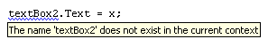
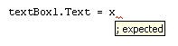
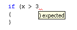
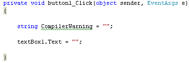
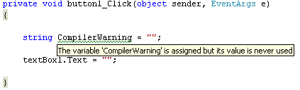

Debugging your C# Apps
Debugging refers to the process of trying to track down errors in your programmes. It can also refer to handling potential errors that may occur. There are three types of errors that we'll take a look at:
- Design-time errors
- Run-Time errors
- Logical errors
The longer your code gets, the harder it is to track down why things are not working. By the end of this section, you should have a good idea of where to start looking for problems. But bear in mind that debugging can be an art in itself, and it gets easier with practice.
Errors at Design-Time
Design-Time errors are ones that you make before the programme even runs. In fact, for Design-Time errors, the programme won't run at all, most of the time. You'll get a popup message telling you that there were build errors, and asking would you like to continue.
Design-Time errors are easy enough to spot because the C# software will underline them with a wavy coloured line. You'll see three different coloured lines: blue, red and green. The blue wavy lines are known as Edit and Continue issues, meaning that you can make change to your code without having to stop the programme altogether. Red wavy lines are Syntax errors, such as a missing semicolon at the end of a line, or a missing curly bracket in an IF Statement. Green wavy lines are Compiler Warnings. You get these when C# spots something that could potentially cause a problem, such as declaring a variable that's never used.
Blue Wavy Lines
In the image below, you can see that there's a blue wavy line under textBox2 (later versions of Visual Studio may have red wavy lines, instead of blue ones):

This is an Edit and Continue error. It's been flagged because the form doesn't have a control called textBox2 - it's called textBox1. We can simply delete the 2 and replace it with a 1. The programme can then run successfully. Holding your mouse over the wavy underline gives an explanation of the error. Some of these explanations are not terribly helpful, however!
Red Wavy Lines
These are Syntax errors. (Syntax is the "grammar" of a programming language, all those curly brackets and semicolons. Think of a Syntax error as the equivalent of programming spelling mistake.)
In the code below, we've missed out the semicolon at the end of the line:
Holding the mouse pointer over the red wavy line gives the following message:

It's telling us that a semicolon ( ; ) is expected where the red wavy underline is.
In the next image, we've missed out a round bracket for the IF Statement:

Green Wavy Lines
These are Compiler Warnings, the C# way of alerting you to potential problems. As an example, here's some code that has a green wavy underline:

Holding the mouse pointer over the green underlines gives the following message:

C# is flagging this because we have set aside some memory for the variable, but we're not doing anything with it.
This one is easy enough to solve, but some Compiler Errors can be a bit of a nuisance, and the messages not nearly as helpful as the one above!
Whatever the colour of the underline, though, the point to bear in mind is this:
C# thinks it has spotted an error in your code. It's up to you to correct it!
In the next part, we'll take a look at Run Time errors.